Site Report
This site demonstrates animation, Transition, Colouring, use of Grid, Flex, Opacity. In this Assignment I have implemented every library function that were taught in the class. This site report shows the progress of my portfolio website for the Web Development module. The main purpose of this website is to show case my knowledge for the HTML and CSS and my creativity for desigining website. I also took some help from AI and watched some Videos in Youttube to understand the working principle of every function. I used AI for Hamburger Icons and it helped me to implement on my code. As you can see the layout of my Portfolio this is my creativity. I used Figma to Design the wireframe for my Website.
Design
Coloring
In my Website I have used the color combinition of mainly brown color, light brown, dark brown etc.
- I used #e9d9c7 as my backgroud color.
- For Side-bar I used #20201a this color.
- For some Text I used #474130 and #e9d9c7 according to the backgroud color, where text would be visible.
I choosed this color because it makes my website user friendly and I wanted to go with the Old-money aesthetic vibe.
Font
I have used 'didot-2', serif for my font in my website, as it matches the vibe of my website and the color.
Navigation and layout
I have made floating navgation bar at left side of my website which is also known side bar.
For my Layout I have made a glass like box usign opacity and box-shadow, where I have adde some shapes at backgroud which can be seen in blur effect.
In responsive to mobile my side bar will use hamburger effect so that while opening on mobile it won't look compact.
While using hamburger we can utilize the remaining area to make clean design for mobiles.
I have added Hover effects on my layout like on the buttons where user can click and interact.
while using hover I have added transition to make the hover look smooth.
Inspiration Source
- Old Money Color - For coloring.
- Didot Font - For Font.
- Transition - For Transition and smooth aniamtion.
Portfolio WireFrame
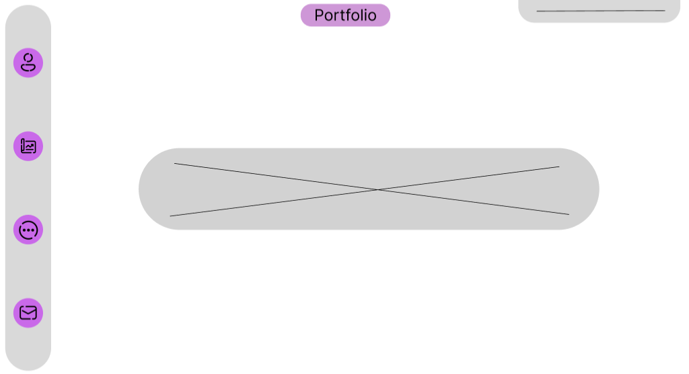
This is the Wireframe for the First page where we welcome user to the website. And they can nevigate to any page through navigation bar that I designeed at the side.
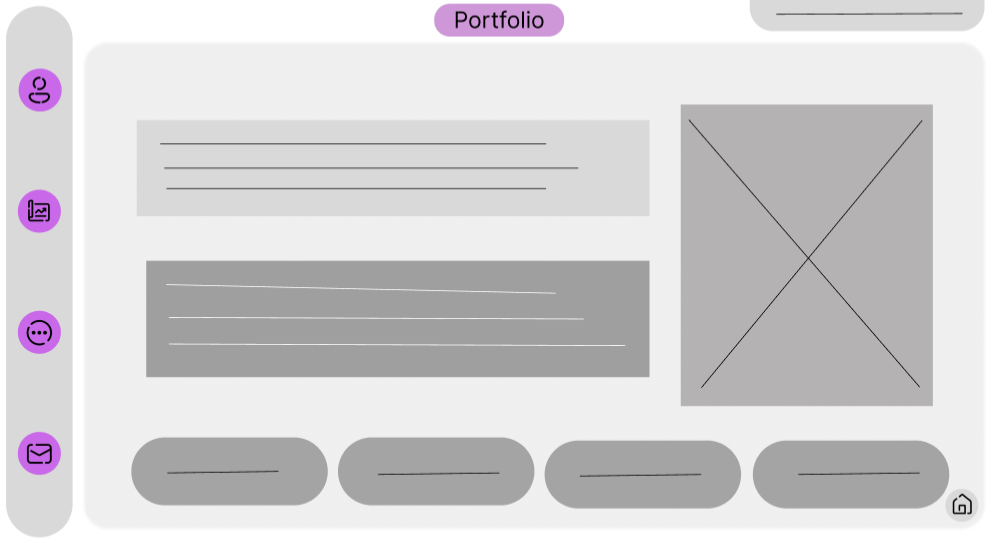
This is the Wireframe for the second page index.HTML where viewers can see my name and abouut me anf my skills.
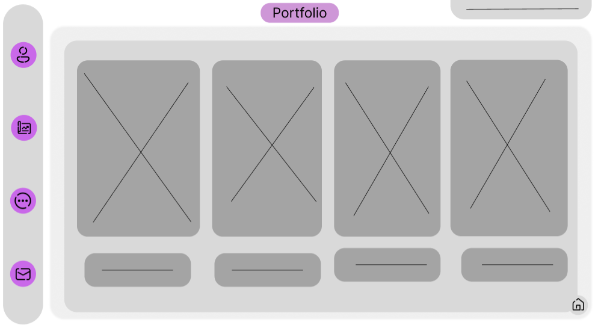
This is the Wireframe for the thrd page project.HTML where viewers can see my project that I have completed till this date and even if I havent completed any project we can see the concept where we can add the project we had completed.
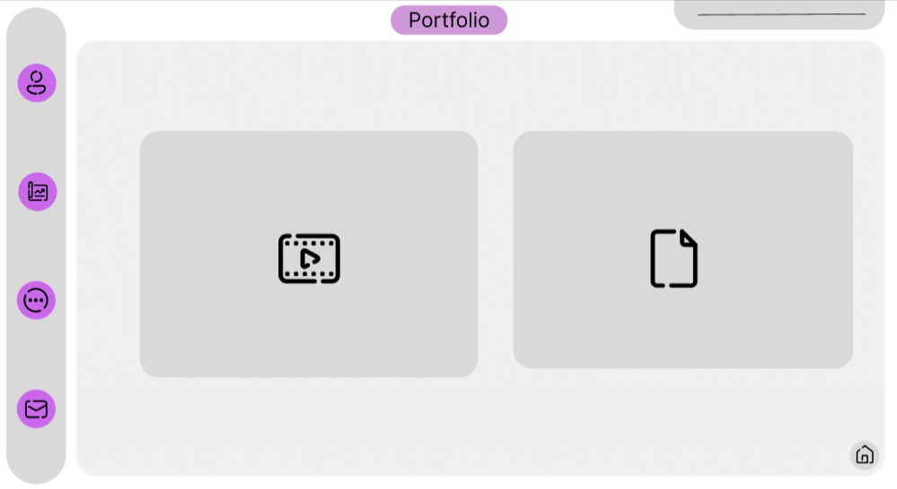
This is the Wireframe for my Fourth page where I named it more.HTML, because I added video and sitereport in my side bar it didn't lookd good. So, I added this extra page to make it clean. In this page we can choose which to look at, then it will direct the user to their selected page.

This page is the Fifth page where viewrs can view my Demo Video for this Web Assignment. In this page It will be youtube Linked based video, where we can play video of youtube.
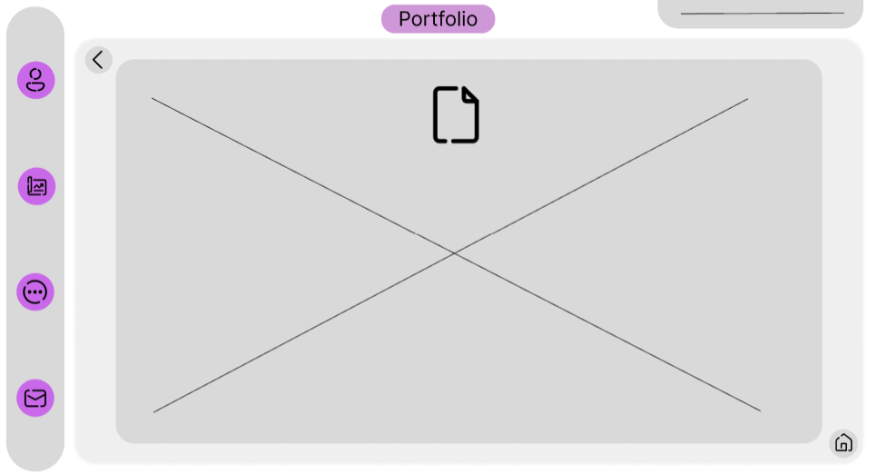
This is the Sixth Page where I will be writing my report on this assignment of web. This page will show my every steps and idea that I implemented in this Assignment.
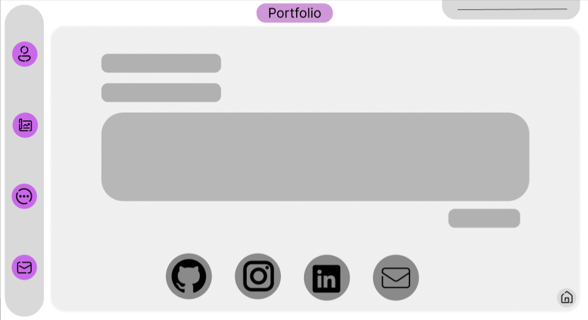
This is the last page Contact.HTML where viewers can contact me through social media like Git-Hub, Instagram, Linkedin and E-Mail. Where I will provide it with my profile links. And they can also send me mail through the form that I will make in this Page.
Implementations
Responsive Design
I have made my website mobile responsive too where users can view my website through their phones.
I used Breakpoint at 700xp and 1100px so that we can view from any kind of phones. CSS Grid was used for main layout, which made it easy to make responsive for mobile, Flex box for components alignmnets.
Semantic HTML
In this Project I used appropriate tags: <nav> for navigation, <header>, <main>, <footer>, <section> for content blocks and <article> for project cards.
HTML Validation
 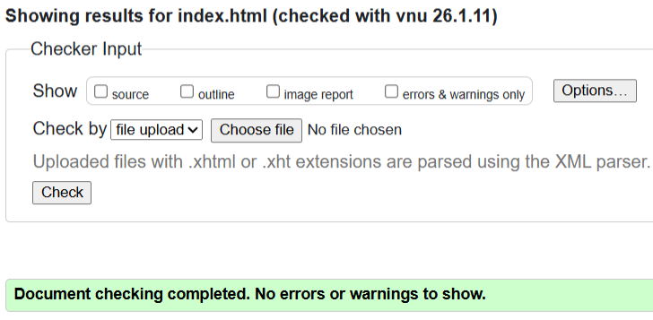
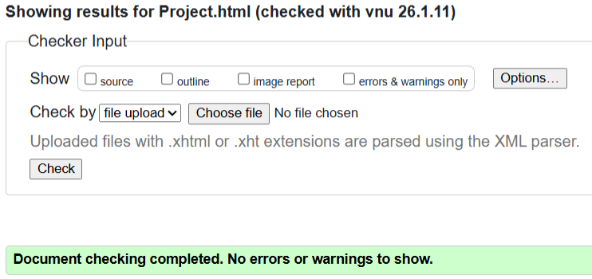
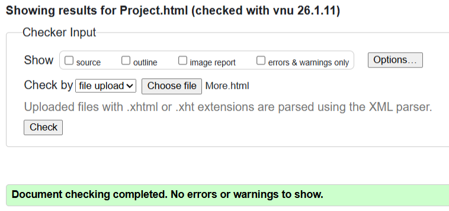
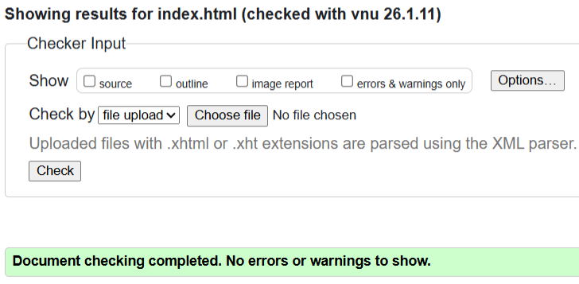
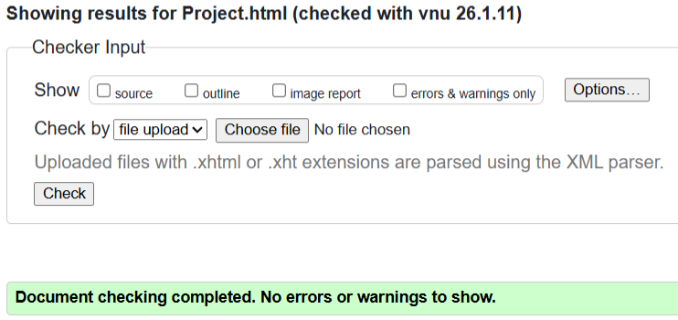
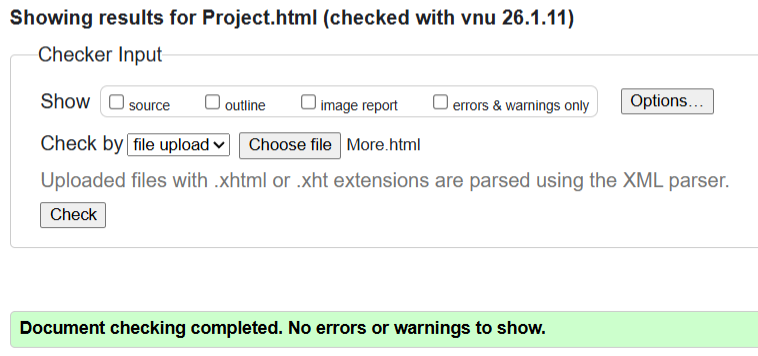
 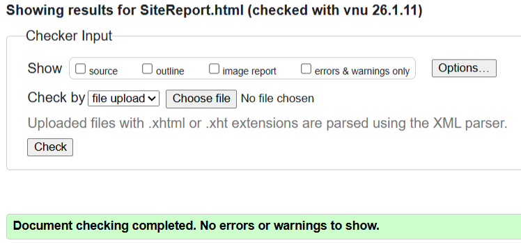
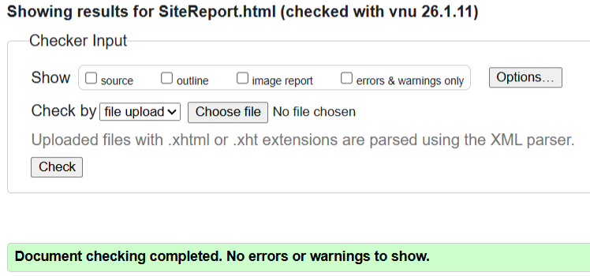

CSS Validation
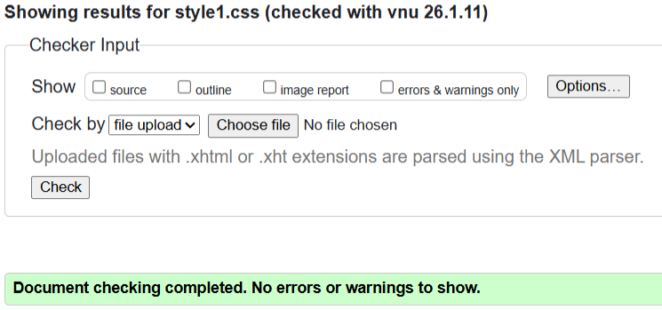 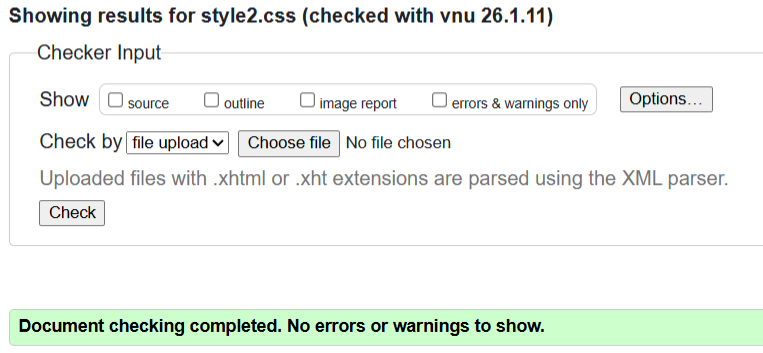 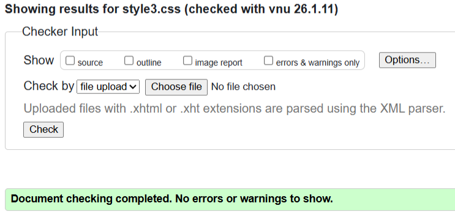 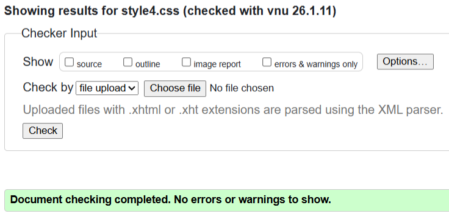 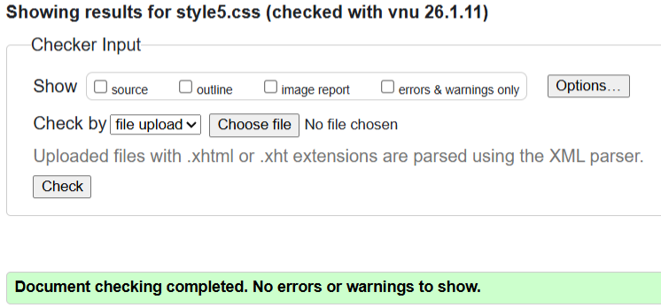 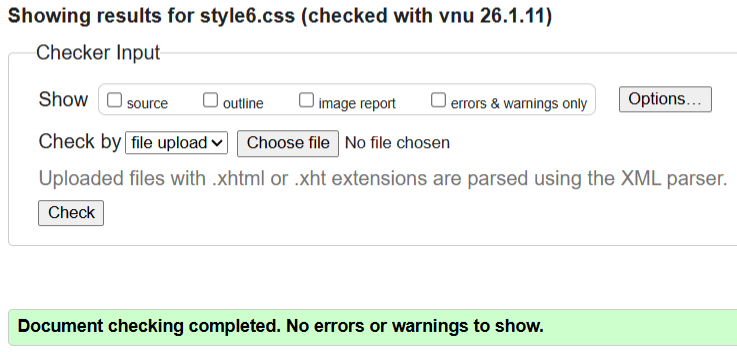 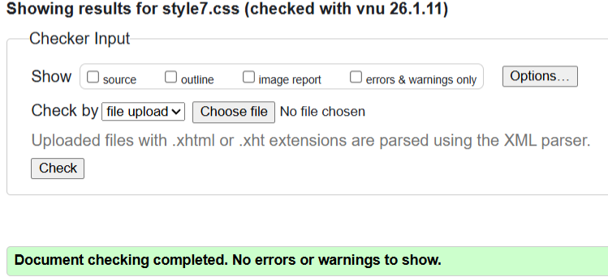